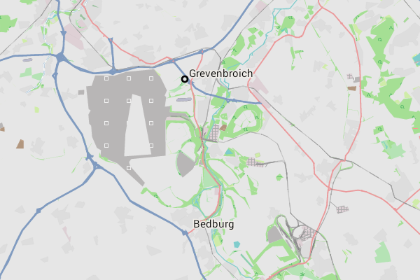

Die Freizeitkarten richten sich an Nutzer von Android-Geräten. Die Offline-Vektor-Karten basieren auf den Projekten OpenStreetMap (OSM) und Mapsforge. Sie können zusammen mit verschiedenen Android-Karten-Apps (z.B. Locus Map, OruxMaps, c:geo, CacheBox, ...) benutzt werden.
Braunkohletagebau Garzweiler: In 30 Jahren ist das 'Restloch' ein 23 qkm großer See.
40 Jahre wird es dann dauern bis der See mit Rheinwasser gefüllt ist.
Die Freizeitkarten basieren auf den Daten des OSM-Projektes. Sie wurden als Universalkarten entwickelt, für
- die Freizeit
- und bei Outdoor-Aktivitäten.
Eigenschaften der Karte:
- für Autofahrer, Radfahrer und Fußgänger geeignet
- topografische Karte mit integrierten Höhenlinien (Äquidistanz 25 Meter)
- Kartenelemente können ein- und ausgeblendet werden
Für die hier verfügbare Karte gilt:
- es werden die öffentlichen und aktuellen Basisdaten des OSM-Projektes verwendet
- die Kartendarstellung lehnt sich an das Look & Feel der OSM-Karte an
- die Karten sind kostenlos und können privat uneingeschränkt verwendet werden (s.a. Lizenzbedingungen)
- die Karte wird regelmäßig (alle zwei Monate) aktualisiert
Kanarische Inseln - La Gomera: Die Schummerung läßt den vulkanischen Ursprung gut erahnen.
Nutzungsbedingungen:
Die Nutzung des Kartenmaterials erfolgt auf eigene Gefahr. Das Kartenmaterial kann Fehler enthalten oder unzureichend sein. Die Ersteller dieser Karte übernehmen keinerlei Gewährleistung oder Haftung für Schäden die direkt oder indirekt durch die Nutzung des Kartenmaterials entstehen.
Viel Freude an den Freizeitkarten ... und viele interessante Touren damit.